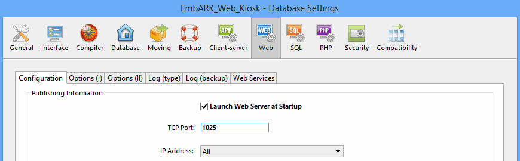

To start the kiosk, follow these steps on the server computer:
- Double-click the EmbARK Web Kiosk executable (application) file.
- The first time you launch the kiosk, you will be asked to select a datafile. Select the datafile you copied over from EmbARK.
Subsequently, when you launch the program, it should find this datafile automatically, as long as it always has the same name and is in the same directory.
- EmbARK Web Kiosk (version 9.0 and later) requires that you enter a registration number. Kiosk will automatically prompt that this be entered. You can obtain your serial number on the Account Info tab of the EmbARK Support Center. If you do not have a serial number, simply click the Demo Mode button; Kiosk will run for 1 hour at a time and then require a restart for continued use.
- The first time you open a new copy of a datafile from EmbARK, the kiosk will run through a series of initialization processes. [See Datafile Initialization for details.]
- The program may take a few minutes to initialize. When the red EmbARK Web Kiosk screen and connection log open, the kiosk is ready to send pages.
Notes
- You can access the main kiosk page (default.htm in the EmbARK Web Kiosk folder) directly by clicking the on-screen TEST button. Alternatively, you may enter the IP address or domain name of the server as the URL from any machine on the local network.
- If there is another web application running on the same machine, you may see the message "The database cannot be published." In this case, stop the other application or configure Web Kiosk to run on an alternate port.
- In some cases, a Windows security protocal called Data Execution Prevention (DEP) will prevent the Kiosk application from launching. To correct this, the EmbARK_Web_Kiosk.exe application must be added to the list of exceptions.
Datafile Initialization
The first time a datafile is opened with the kiosk -- or if you open a datafile in the kiosk after having opened it in EmbARK -- the kiosk goes through a serious of initialization processes which include updating search indices and generating thumbnails.
Some of these processes can take a long time, and during development there may be occasions when you want to skip all or some of them.
By default, you will be prompted for each process at startup and have the option of clicking OK to run the process or Cancel to skip it. Following is a list of the prompts with a description of what they do:
- Would you like to convert EmbARK's traditional indices to the Web Kiosk fast indices?
4D, the database upon which EmbARK and the kiosk are built, provides a range of index formats that can be optimized for data entry or for searching. Since both functions are important in EmbARK, the EmbARK indices run middle-of-the-road. However, very little data entry happens in the kiosk; it primarily queries the datafile. Therefore, optimizing indices for searching can enhance kiosk performance.
Clicking OK to this prompt causes the kiosk to drop indices for fields that are used in kiosk searches, then recreate them, optimized for queries. The impact will vary across datafiles and servers. For large datafiles this process can take a long time, but also have a greater impact.
If you click Cancel to this option but decide that you want to convert the indices later, you can do so by clicking the 'Fast Indexes' button in Preferences.
- Would you like to update keyword flags?
Clicking OK to this prompt causes the kiosk to loop through each keyword in the datafile to determine which ones are linked to web accessible objects. This enables the keyword search to display only those keywords that will return results.
This process can take a long time, but is only necessary for sites that use the keyword search feature.
- Would you like to verify thumbnails and previews?
Clicking OK to this prompt causes the kiosk to verify that a thumbnail and preview image exists for each web accessible surrogate, portfolio or index tree image, and to create those that are missing. See Generating Thumbnails and Previews for details.
If you click Cancel to this option but decide that you want to export thumbnails and previews later, you can do so by clicking the 'Export Images' button in Preferences.
- Would you like to update the Advanced Search value lists?
Clicking OK to this prompt causes the kiosk to update the Advanced Search value lists.
If you click Cancel to this option but decide that you want to update search lists later, you can do so by clicking the 'Update Search Lists' button in Preferences. This updates both Advanced Search and Quick Search lists.
- Would you like to update the Quick Search value lists?
Clicking OK to this prompt causes the kiosk to update the Quick Search word lists. This update enables the "Quick Search" as accessed in the left button bar on the Web Kiosk site.
If you click Cancel to this option but decide that you want to update search lists later, you can do so by clicking the 'Update Search Lists' button on the Search Fields tab of Preferences. This updates both Advanced Search and Quick Search lists.
Notes
- In Preferences you can set default answers for all of these Startup prompts. Then the kiosk will automatically run or not run each of these initialization processes when opening a new datafile, without prompting you. [See Startup Defaults for details.]
|
Configuring the Kiosk to run at an alternate port
If the kiosk must share an IP address with another web server (IIS or Apache for example), follow these steps to configure the kiosk to use an alternate port. If the Kiosk is running on the same port as another web server, the message "The database cannot be published." will display on start-up.
- Launch the Web Kiosk. Click the Preferences button on the start-up screen.
- On the General tab, click the button that says Web Server Prefs.
- Click to the Web tab. It should default to the Configuration sub-tab by default.
- In the TCP Port number box, enter the new port number.
If you are unsure what port numbers are allowed, try entering 1025.
- Close the OK box button. The Kiosk may present a prompt about restarting the web server.

You can now access the main kiosk page by clicking the TEST button or entering the IP address or domain name of the server, followed by a colon and the new port number (for example, http://www.ourkiosk.com:1025).
|
|